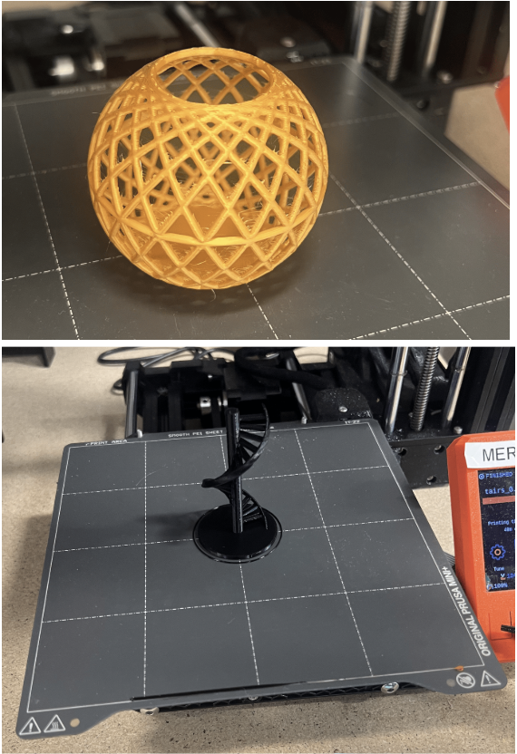

Design Project #1
My first print was a name tag. I didn’t design any of this myself. I used Greg Buckland’s 3MF file, and just edited my name. The sizing, design, and name field were already provided. I only had to slice, and export the G-code to a USB drive. This step is necessary in order for the printer to actually understand our file. Slicing creates the layers that the printer understands to build up the product. The 3MF file also paused the printer when it was time to add my name, which was a success!
I first decided to use a “torture test” that would print something practical or useful, while still pushing the limits of the printer, as it’s intended. My first design was a black PLA spiral staircase. My second design was a gold PLA webbed ball. Both of my “torture tests” printed successfully! However, I understand the printer is not designed to effectively print items without supports, which are a built-in webbing of sorts to keep the print’s shape as it's being printed. I could see the stringy “would-be” supports in the webbed ball. This could be cleaned up in the final stages of the project, but this is what we have now.
Both of my prints were STL files. STL is a simple instruction for the printer. 3MF, on the other hand, encodes additional information such as color, and pause instructions for the printer.

Info about first photo
Here are my completed prints! Both the ball and spiral staircase torture tests

Here are my slicer settings for my name tag

Here are my slicer settings for my torture tests